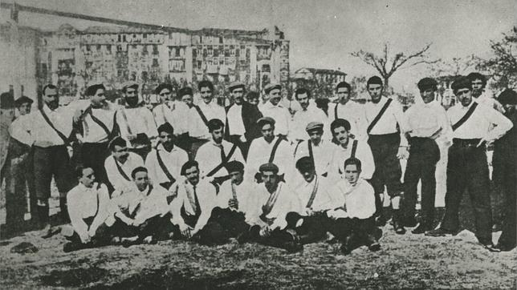

Historia
Los primeros años
Tras los primeros protoclubes de fútbol surgidos en Madrid a finales del siglo XIX, un grupo de jóvenes y antiguos integrantes de la Institución Libre de Enseñanza formaron en 1897 un equipo que resultó ser el antecesor de la entidad madridista.
En 1901 adoptó el nombre de Madrid Foot-Ball Club. La legalización del club concluyó en 1902, fecha que figura oficialmente en sus registros.
En la Junta General Extraordinaria celebrada el 6 de marzo de 1902 fueron aprobados sus primeros estatutos. Los integrantes eligieron a sus primeros dirigentes, encabezados por Juan Padrós como primer presidente electo.
Primeros títulos
Durante sus primeros años el club consiguió numerosas victorias en las competiciones que comenzaban a organizarse en Madrid. Entre 1904 y 1908 consiguió varios campeonatos consecutivos, que fueron sus primeros títulos oficiales a nivel estatal.
El club también comenzó a disputar partidos internacionales. En 1905 se enfrentó al Gallia Club de París en el Hipódromo de Madrid, en un partido que terminó con empate a un gol.
El crecimiento del club
Con el paso de los años fueron adquiriendo importancia los aspectos tácticos durante los partidos. El británico Johnson fue nombrado uno de los primeros entrenadores de la historia del club.
La magnitud que fue adquiriendo el club se hizo cada vez más notable. El 29 de junio de 1920 recibió una misiva procedente del rey de España Alfonso XIII.
Desde ese momento el club adquirió la denominación de Real Madrid Foot-Ball Club y obtuvo el derecho a portar la corona real en su escudo.
En 1924 inauguró el Campo del Real Madrid Club de Fútbol, conocido popularmente como el Estadio de Chamartín.
